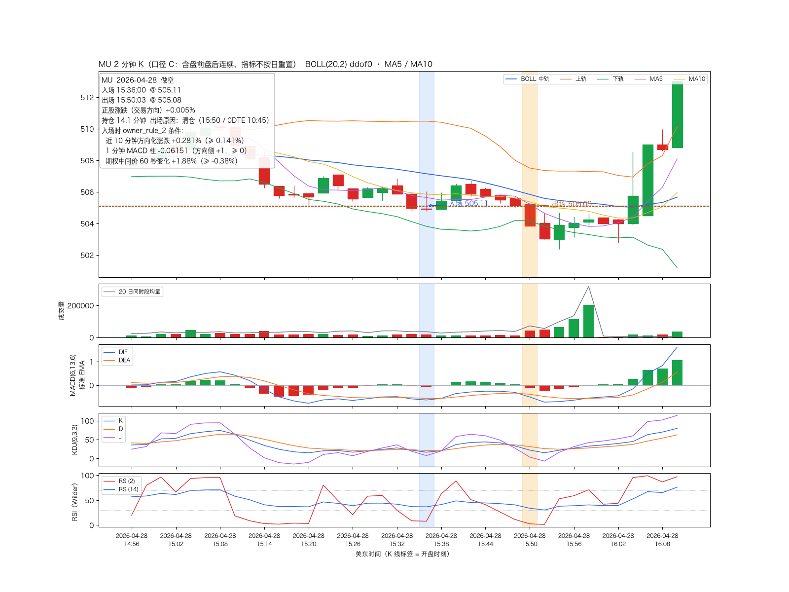
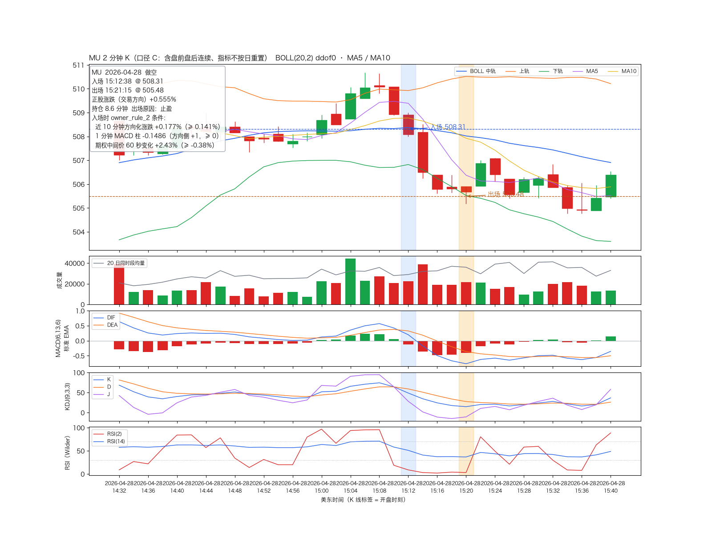
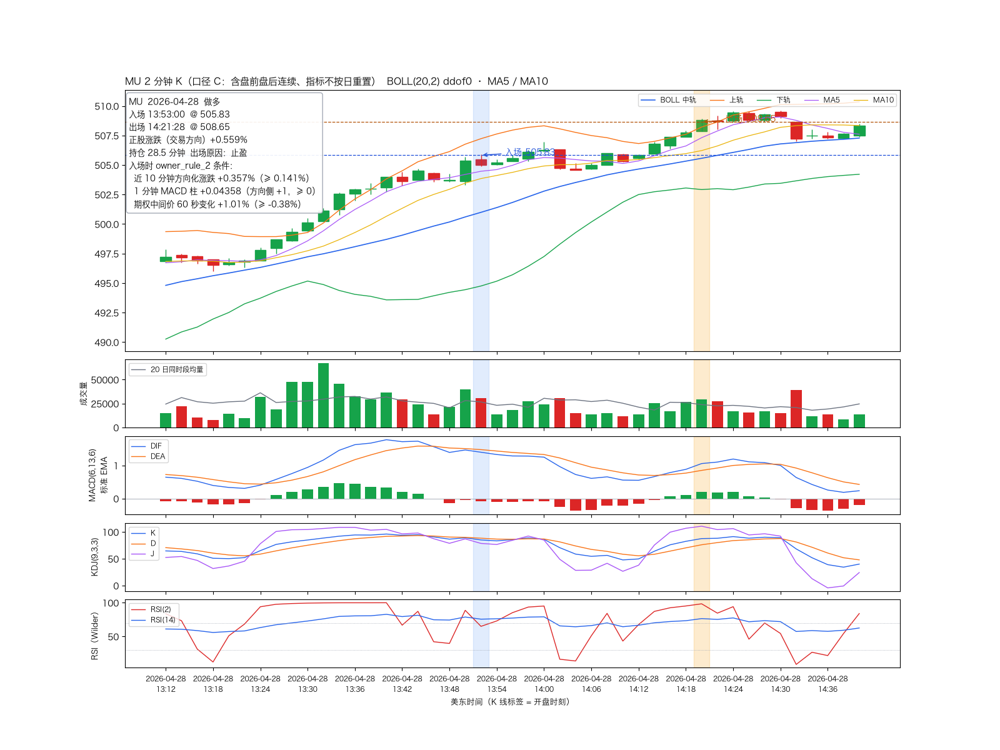
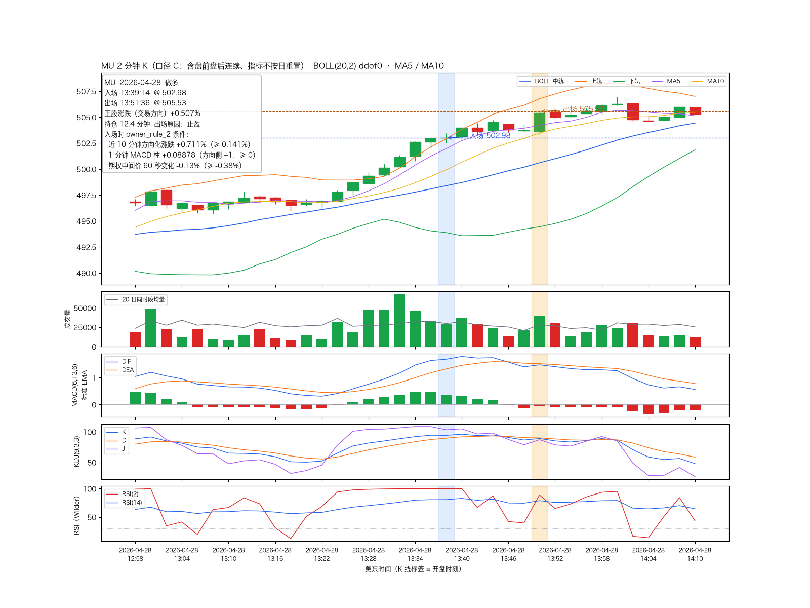
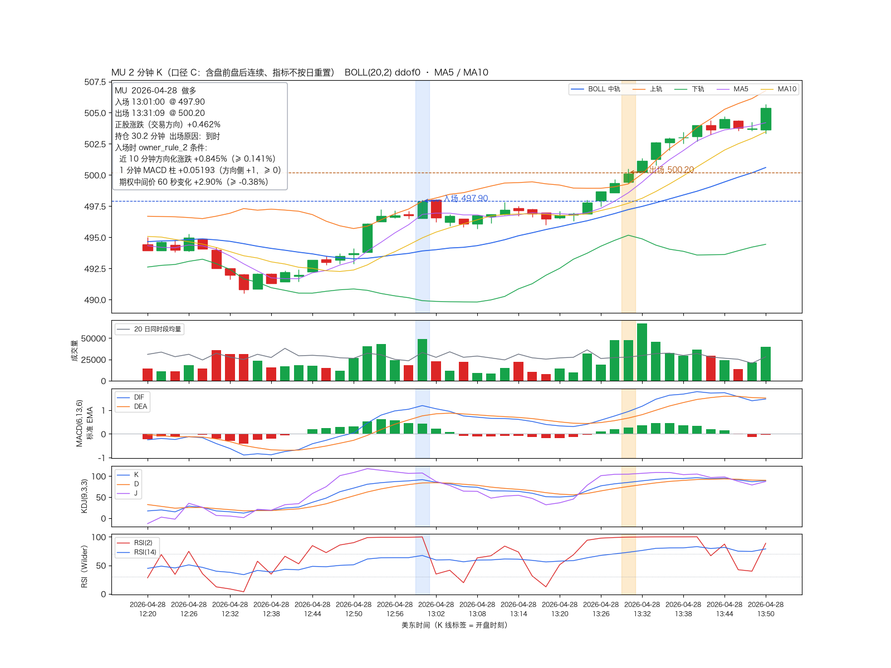
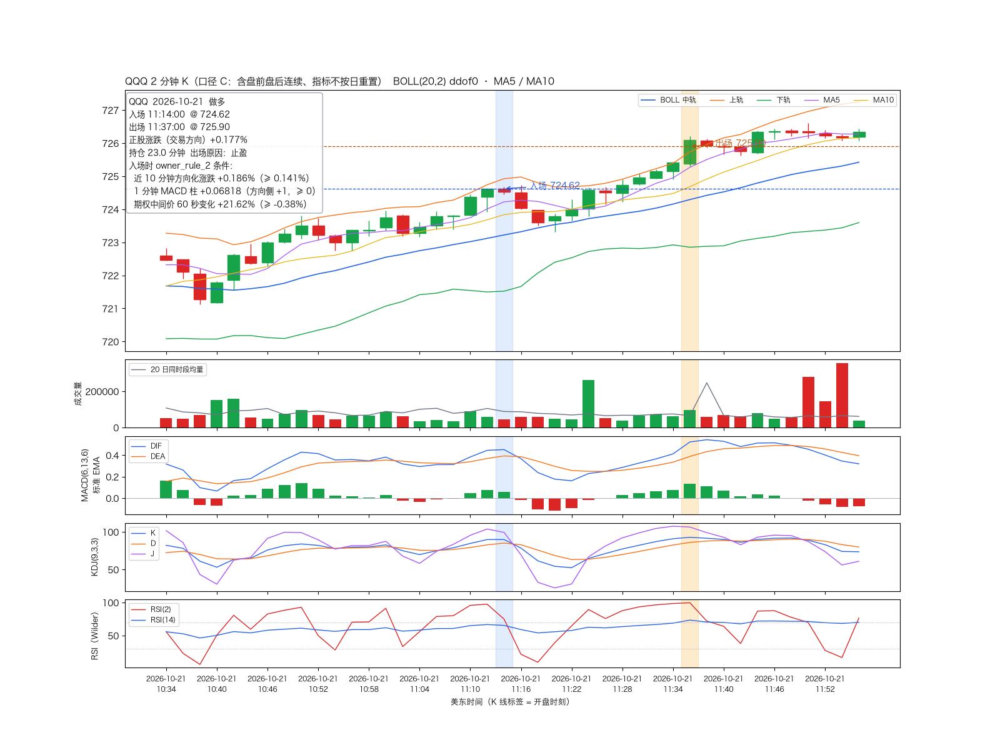
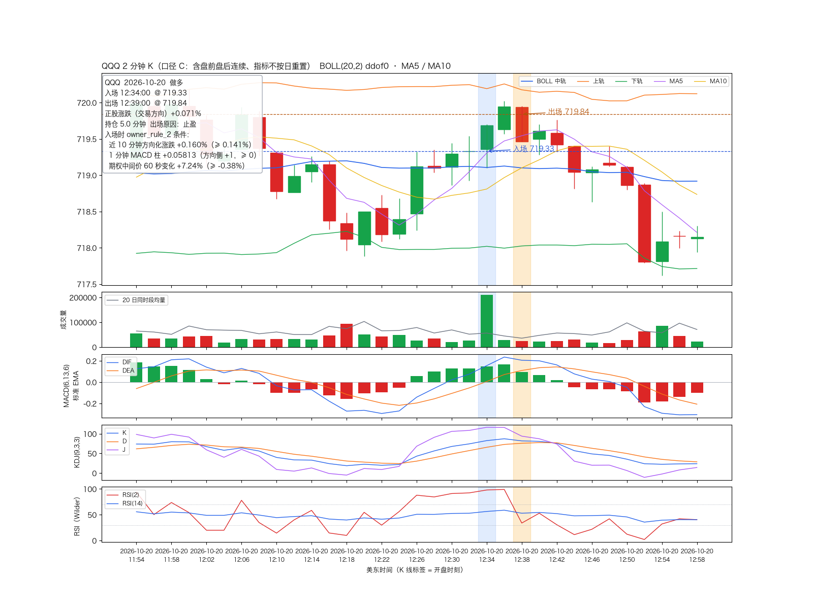
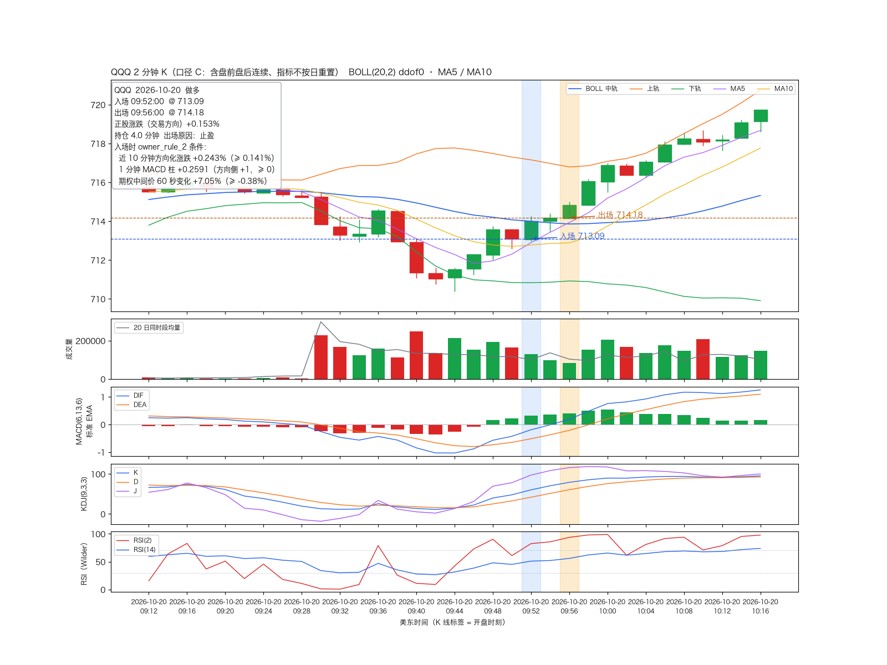
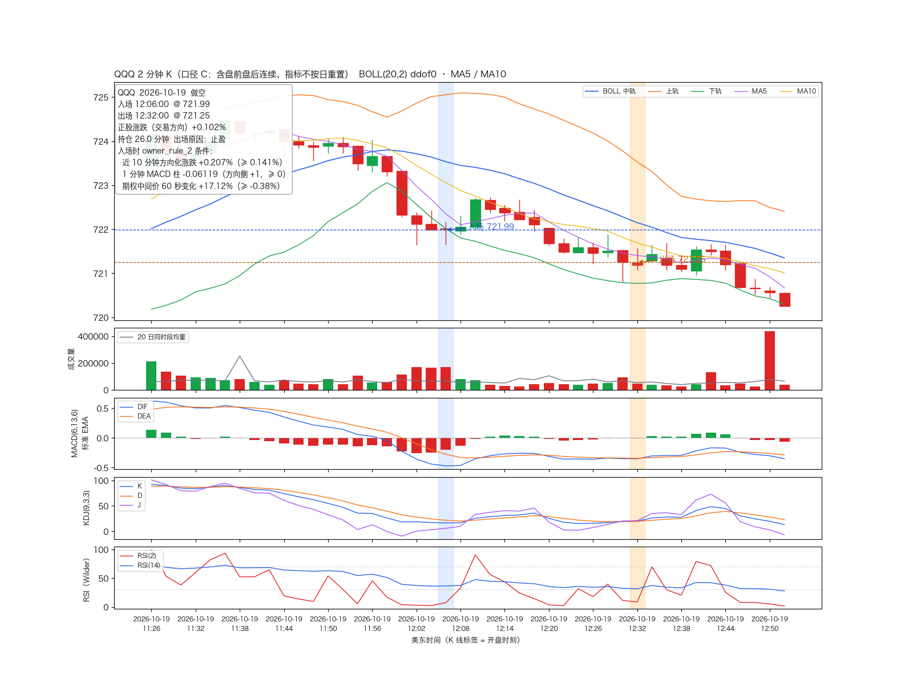
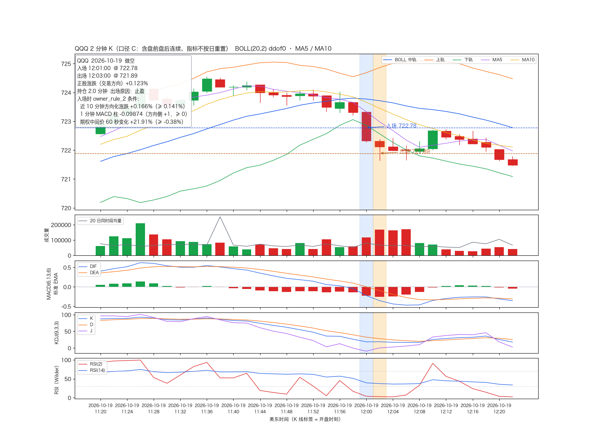

最近 N 笔，按时间倒序，不挑选。规则与数据见 CASES_README.md。盈亏 = 正股从入场到出场朝交易方向的涨跌（%）。










| 标的 | 组 | 入场（美东） | 方向 | 入场价 | 出场价 | 正股涨跌 | 持仓（分钟） | 出场原因 | 图 |
|---|---|---|---|---|---|---|---|---|---|
| MU | 盈利 | 2026-04-28 15:36:00 | 做空 | 505.11 | 505.08 | +0.005% | 14.1 | 清仓（15:50 / 0DTE 10:45） | 图 |
| MU | 盈利 | 2026-04-28 15:12:38 | 做空 | 508.31 | 505.48 | +0.555% | 8.6 | 止盈 | 图 |
| MU | 盈利 | 2026-04-28 13:53:00 | 做多 | 505.83 | 508.65 | +0.559% | 28.5 | 止盈 | 图 |
| MU | 盈利 | 2026-04-28 13:39:14 | 做多 | 502.98 | 505.53 | +0.507% | 12.4 | 止盈 | 图 |
| MU | 盈利 | 2026-04-28 13:01:00 | 做多 | 497.90 | 500.20 | +0.462% | 30.2 | 到时 | 图 |
| MU | 亏损 | 2026-04-28 14:34:09 | 做空 | 507.40 | 509.88 | -0.488% | 32.4 | 到时 | 图 |
| MU | 亏损 | 2026-04-28 12:10:11 | 做多 | 496.10 | 492.03 | -0.821% | 31.1 | 到时 | 图 |
| MU | 亏损 | 2026-04-28 11:35:21 | 做空 | 493.28 | 496.00 | -0.552% | 30.2 | 到时 | 图 |
| MU | 亏损 | 2026-04-28 10:50:52 | 做空 | 490.50 | 498.13 | -1.554% | 30.2 | 到时 | 图 |
| MU | 亏损 | 2026-04-28 10:19:00 | 做多 | 507.67 | 494.10 | -2.673% | 30.3 | 到时 | 图 |
| QQQ | 盈利 | 2026-10-21 11:14:00 | 做多 | 724.62 | 725.90 | +0.177% | 23.0 | 止盈 | 图 |
| QQQ | 盈利 | 2026-10-20 12:34:00 | 做多 | 719.33 | 719.84 | +0.071% | 5.0 | 止盈 | 图 |
| QQQ | 盈利 | 2026-10-20 09:52:00 | 做多 | 713.09 | 714.18 | +0.153% | 4.0 | 止盈 | 图 |
| QQQ | 盈利 | 2026-10-19 12:06:00 | 做空 | 721.99 | 721.25 | +0.102% | 26.0 | 止盈 | 图 |
| QQQ | 盈利 | 2026-10-19 12:01:00 | 做空 | 722.78 | 721.89 | +0.123% | 2.0 | 止盈 | 图 |
| QQQ | 亏损 | 2026-10-21 15:06:00 | 做空 | 723.09 | 725.70 | -0.361% | 21.0 | 止损 | 图 |
| QQQ | 亏损 | 2026-10-21 12:40:00 | 做多 | 727.47 | 727.44 | -0.004% | 32.0 | 到时 | 图 |
| QQQ | 亏损 | 2026-10-21 10:14:00 | 做空 | 720.72 | 721.06 | -0.047% | 5.0 | 止盈 | 图 |
| QQQ | 亏损 | 2026-10-21 09:44:00 | 做空 | 719.89 | 721.60 | -0.237% | 3.0 | 止损 | 图 |
| QQQ | 亏损 | 2026-10-20 14:55:00 | 做多 | 718.50 | 717.37 | -0.157% | 31.0 | 到时 | 图 |